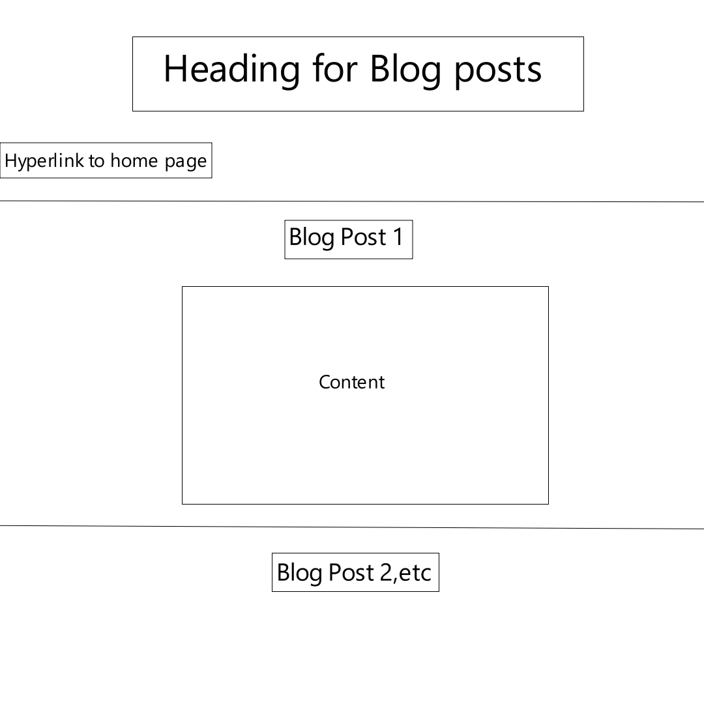

Blog Post 1
GitHub
GitHub is an absolute nightmare for me, definitely one of my goals before the end of the block is to be comfortable with GitHub and its functionality. Many of my group members from last year know that I struggle with understanding how to use its capabilities due to a VERY rational fear that it will override something important and will be lost in the eternal void never to be found again. That was my experience when using GitHub for unity games, so far, using it in interactive media has also proved a challenge to be honest, but it is something I can learn by playing around with and having the occasional visit to stack overflow.
Weekly Readings
The reading I selected for the week was The Library of Babel by Jorge Luis Borges. I will be honest and say that it was a dense reading, personally, however I did enjoy the vivid and hyper-detailed descriptions present within it. It felt similar to walking through a labyrinth with no end from a science fiction point of view. How it relates to interactive media and the internet is that it replicates the feeling of the world wide web. It is endless and infinite and yet anything can be found.
I did attempt the reading about hypertext by Noah Wardrip-Fruin, however what was discussed in said reading was far above my current level to make sense of it.
History of The Web
While completing the module. We learnt about the history of the internet and the world wide web and how it came to be. Initially began by CERN the world wide web was a place used to store and access research papers and academia, hence it was primarily used by researchers or government. Since then, it exploded into what it is now. Similar to how it is hypothesized that the big bang was an explosion that created the universe and has since been expanding non-stop, so has the internet. Whilst still able to perform its uses to academia that is now just a miniscule of its current capabilities. The research stored on the web itself has evolved from only being in text form to now taking shape in videos, podcasts, short image posts with captions, etc and it will continue to evolve with time.
Goals
My goals for the course is to become proficient in the multiple programming languages available to us and to use it has a basis to learn more in the future to create a wider and diverse portfolio of projects and learn about the dev industry, not necessarily relating to games about also web and software. In the short term, I would like to be able to learn the languages in a consistent manner and become comfortable with anything Git related.
Blog Post 2
Folder Structure
While my website starts taking shape, the initial folder structure will comprise of the index page, which will have a small introductory paragraph, detailing what the website content will be. The index page will also contain hyperlinks to the blog document and an about document. The blog document will contain the content for the weekly blogs and the about document will contain brief description of myself. The folder will also contain an image folder to contain any images I use within my document. If I have an idea to use other forms of media such as gifs or videos, they will also be contained in a separate folder so that it is organised and easier to access.
Wireframes
My aim with the initial wireframes is to create a website with a simple and basic outline that allows me to understand how html elements can be used. As my knowledge of html and other languages develop, so to will the wireframes and the conceptual ideas for the website.

Inspo Websites


The above websites are simple yet effectively communicate the intention of the host to the users. Navigation on the websites are made particularly accessible to the user. There is less conflict between their input and the desired output.
Reflections on module
The reading for this week regarding hypertext was very dense for me. I struggled to understand the various concepts that was mentioned within the reading. As my knowledge within the course increases, I will be re-visiting the reading to see if my understanding of it increases and I am able to comprehend it.
Interaction is the response of something from a user’s input. How the user interprets the information provided to them and how they choose to interact with it. In web development terms, the user engages with the application with the intention of finding something and in turn the application must provide the necessary information to the user in a concise manner